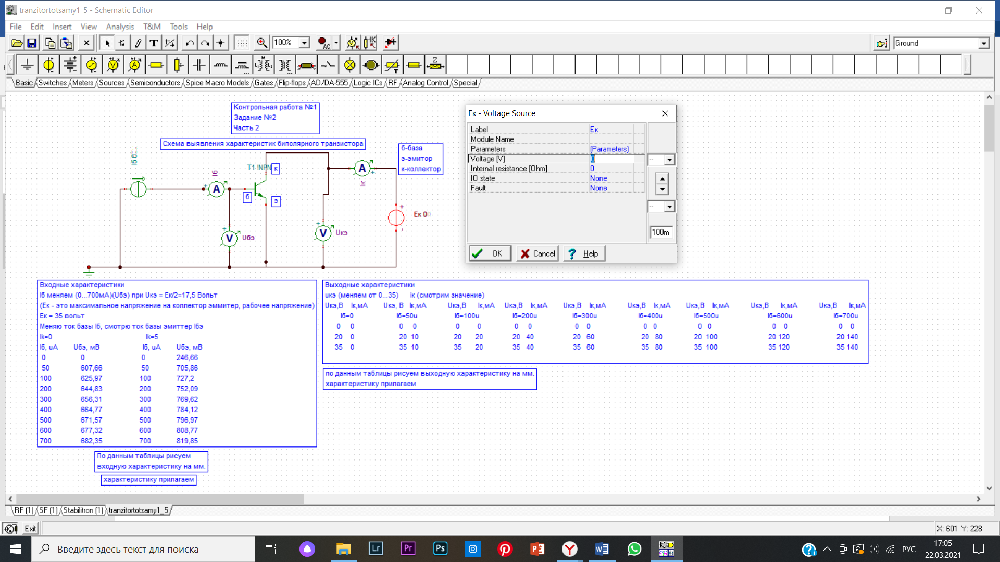

Решение задачи №2 (биполярный транзистор)
Для решения ВТОРОЙ задачи ВТОРОЙ части воспользуемся компьютерной моделью «TINA» и типовой схемой простого БИПОЛЯРНОГО ТРАНЗИСТОРА (рис.1) (см. раздел «Электрические фильтры»)

Рис. 1
Транзистор – прибор, предназначенный для управления током в электрической цепи. Наиболее популярный вид полупроводникового транзистора – биполярный. В устройство транзистора этого типа входит монокристалл, разделенный на 3 зоны: база (Б), коллектор (К) и эмиттер (Э), каждая из которых имеет свой вывод. Б – база, очень тонкий внутренний слой; Э – эмиттер, предназначается для переноса заряженных частиц в базу; К – коллектор, составляющая, которая имеет тип проводимости, одинаковый с эмиттером, предназначена для сбора зарядов, поступивших с эмиттера. Кратко принцип работы полупроводникового транзистора можно изложить так: при подключении к зажимам эмиттера и базы напряжения одноименного заряда прибор переходит в открытое состояние, при подключении к этим выводам обратных зарядов транзистор закрывается. Первым делом мы построили схему. Чтобы измерить входные характеристики, мы меняем значение Ek на 0В в разделе «Voltage» (рис.2), далее меняем значения напряжения Источника тока Iб от 0мкА до 700мкА в поле «Current (рис.3) и снимаем показания Вольтметра базы-эмиттера Uэб. Меняем значение Ek на 5В в разделе «Voltage» и проделываем тот же путь, что и при 0В.

Рис. 2

Рис. 3
Чтобы измерить выходные характеристики, мы меняем значение Источника тока Iб на 0мкА в разделе «Current» (рис.4), далее меняем значение Eк в разделе «Voltage» от 0В до 35В (рис.5) и снимаем значения Силы тока коллектора Ik. Меняем значение Источника тока Iб на 50мкА, 100 мкА, 200мкА, 300мкА, 400мкА, 500мкА, 600мкА, 700мкА в разделе «Current» и проделываем тот же путь, что и при 0мкА.

Рис. 4

Рис. 5
Строим входные и выходные характеристики по точкам на миллиметровке (характеристику прилагаем) и в программе Excel.(рис. 6)

Рис. 6
Итак, мы решили ВТОРУЮ задачу ВТОРОЙ части– построили модель простейшего БИПОЛЯРНОГО ТРАНЗИСТОРА (рис.7)

Рис. 7